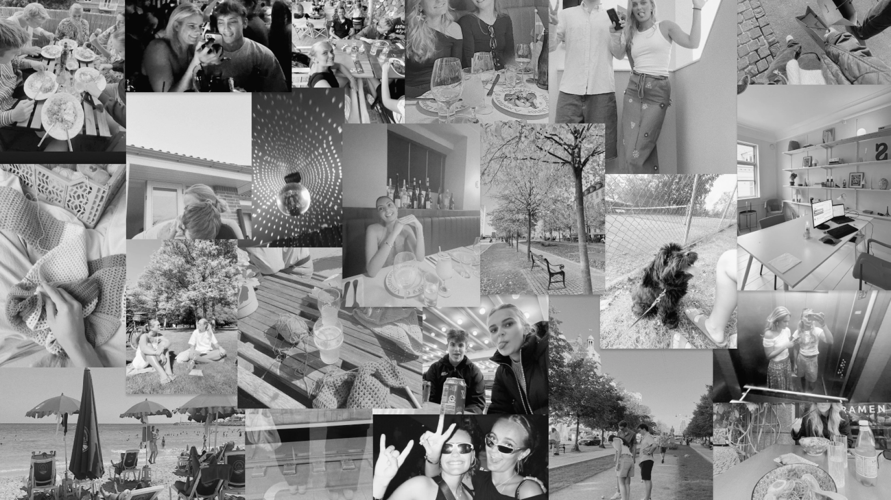

Om mig
Mit navn er Sarah, jeg er en 21 årig pige som ligenu bor i København, men er oprindeligt fra Hørsholm. I hverdagen læser jeg multimediedesign. Jeg er ansat hos TopSupplies, men jeg arbejder hjemmefra i stedet for at være på kontoret i Hørsholm. Dette giver mig friheden til selv at vælge mine arbejdstimer, hvilket gør det nemmere at finde en balance mellem studier og arbejde.
Uddannelse og arbejde
Jeg gennemførte min folkeskoleuddannelse på Hørsholm Skole, hvor jeg fulgte alle klassetrin fra 0. til 9. klasse. Efter folkeskolen fortsatte jeg min uddannelse på Rungsted Gymnasium, hvor jeg valgte linjen med Samfundsfag A og Matematik A. Efter at have afsluttet gymnasiet besluttede jeg at tage et par sabbatår. I løbet af mine sabbatår begyndte jeg at arbejde hos TopSupplies, en virksomhed specialiseret i salg af reklameartikler. Samtidig med mit arbejde i sabbatåret tog jeg også et kursus på Københavns Kunstskole. Under et særligt forløb om visuel fortælling fokuserede jeg på tegneserieskabelse.
Hobby
Under coronatiden udviklede jeg en interesse for at hækle, og denne aktivitet delte jeg med min veninde. Efter at have skabt forskellige ting såsom toppe, pudebetræk og tasker, blev jeg også fascineret af at strikke. Jeg har skabt striktrøjer, t-shirts, tasker og meget mere. Evnen til at udfolde min kreativitet gennem håndarbejde finder jeg yderst berigende, og det ekstra plus ved at kunne skabe beklædningsgenstande er særligt tilfredsstillende. Ud over min passion for garn har jeg altid dyrket min kreativitet gennem maleri og tegning.
Interesser
At være sammen med venner og familie er for mig en uvurderlig kilde til glæde og støtte. Samværet med dem, er en konstant påmindelse om værdien af fællesskab og kærlighed.
Rejser er for mig en kilde til inspiration og selvforkælelse. At udforske nye steder, møde forskellige kulturer og smage forskellige køkkener er super spændende.
At fordybe mig i mode og fashion er en kreativ udfoldelse, der tillader mig at udtrykke min personlige stil og individualitet. Gennem valg af tøj og accessoires kan jeg skabe unikke udtryk og følge aktuelle trends. Det er ikke blot en påklædning, men en form for kunstnerisk selvudfoldelse, der afspejler mit indre jeg.
